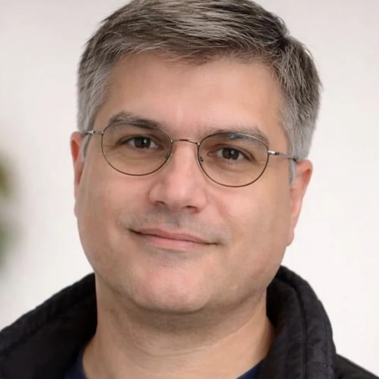

Motion Segmentation and Geometric Motion Modelling
Designed and developed a pipeline to distinguish small moving objects from camera-induced background motion. Developed a geometric motion model with flow representations and training losses.
Computer Vision ResearcherMachine Learning Engineer
Canada
Computer vision and machine learning researcher with a background in software engineering and applied image and signal processing.
I am a computer vision and machine learning researcher with a background spanning software engineering, applied research, and real-world problem solving. My work has progressively moved from applying established engineering tools toward formulating problems from first principles and developing methods around the mathematical and physical structure of the data.
A strong classical foundation in visual and multimedia data has shaped how I approach perception problems. I pay close attention to how data is acquired, represented, compressed, transformed, and degraded; to differences between sensing modalities; and to what information is actually preserved before a model ever sees the input. This perspective has repeatedly proved as important as model selection itself.
Over time, working on increasingly complex and application-driven research problems changed the way I solve problems. Rather than beginning with an existing algorithm and asking whether it can be adapted, I increasingly start from the measurement process: what has physically been observed, what mathematical relationships are present in the data, which information is reliable, and what computational formulation follows from those properties.
I see research as a disciplined process of formulation, analysis, experimentation, validation, and refinement, not as the application of increasingly complex tools. My current direction is toward mathematics-driven computer vision and machine perception: strengthening and connecting the mathematical areas most useful to perception, and using them to derive representations, models, and algorithms for problems where standard pipelines are insufficient.
My long-term goal is to work at the intersection of mathematics, computer vision, machine learning, and intelligent perception, particularly on technically demanding problems where a deeper understanding of the measurement and the structure of the problem can lead to simpler, more reliable, and more deployable solutions.
My work connects mathematical reasoning and an understanding of a problem’s physical and dynamic behaviour with practical challenges in visual perception, signal analysis, and event-based vision. I begin by examining what the sensor measures and identifying the relationships within the data. Those relationships guide problem formulation, representation design, and the choice of model. I am particularly interested in probabilistic modelling, causal reasoning, and integrating geometric structure with uncertainty. I evaluate these choices using classical methods and machine learning, with experiments that test the underlying assumptions and reveal each approach’s limitations. Based on this analysis, I design models suited to the structure of the problem.

Jan 2026 to present
University of Waterloo
Researching and developing an autonomous robot that learns to fly. The work covers learning-based flight control, path planning, estimating the robot’s own position, and collision avoidance.
Jan 2024 to Dec 2025
University of Waterloo
Vision and Image Processing (VIP) Research Group, Waterloo, ON
Designed and developed a pipeline to distinguish small moving objects from camera-induced background motion. Developed a geometric motion model with flow representations and training losses.
Developed a self-supervised camera-pose model using geometric constraints, with tools to analyse estimation errors.
Investigated welding anomalies through temporal and statistical analysis of sensor signals.
Built an infrared detection and tracking pipeline using temporal information, with training and evaluation workflows.
2018 to Jul 2022
University of Salzburg
Multimedia Signal Processing and Security Lab (WaveLab), Salzburg, Austria
Co-authored seven peer-reviewed papers on finger-vein biometrics, covering sensor identification using PRNU analysis and CNNs, presentation-attack detection, and image compression. Also worked on satellite-image analysis for sealed-surface detection. Student research from 2018; project-researcher contracts from May 2020.
2008 to 2015
Software Engineering, Product Management, and Teaching
Product Manager for a commercial broadcast newsroom system; IT Expert and System Analyst at Knauf; Adjunct Lecturer at the University of Applied Science and Technology (UAST), teaching Introduction to Programming (C), Object-Oriented Programming (C#), Software Modelling, and Telecommunication and Mobile Networks.
Detecting small drones in thermal video when the camera itself is moving.
Read the pageDetecting and 3-D-tracking rigid and non-rigid objects from a single moving camera.
Read the pageFive papers on two forensic questions about a finger-vein image: which sensor took it, and was the finger real?
Read the pageTwo papers on how far a finger-vein image can be compressed before recognition starts to fail.
Read the pageSegmenting sealed surfaces from satellite imagery for urbanisation tracking and land-use monitoring.
Read the pageComputer Vision and Geometry
Camera models, geometric constraints, motion analysis, and depth and pose estimation.
Learning and Statistical Methods
Self-supervised learning, probabilistic clustering, and analysis of temporal and statistical dependencies.
Image, Signal and Event Data
Temporal and frequency-domain analysis, infrared imagery, event-data representations, and frame-based event simulation.
Autonomous Robotics
Learning-based flight control, path planning, localization (estimating the robot’s position), and collision avoidance.
Research Implementation
Python, PyTorch, NumPy, SciPy and OpenCV; model implementation, experimental pipelines, and diagnostic tools.
Multi-Method Analysis of Voltage-Current Correlation for Real-Time Porosity Detection in Gas Metal Arc Welding
Oct 2022 to Dec 2025
University of Salzburg, Austria; programme discontinued in 2025.
Oct 2015 to Jun 2022
University of Salzburg & Salzburg University of Applied Sciences, Austria
111/120 credits completed; master’s thesis not submitted.
2005 to 2008
University of Pune (Fergusson College), India
University of Alberta / AMII (2024)
Coursera Project Network (2024)
Imperial College London (2020 to 2021)